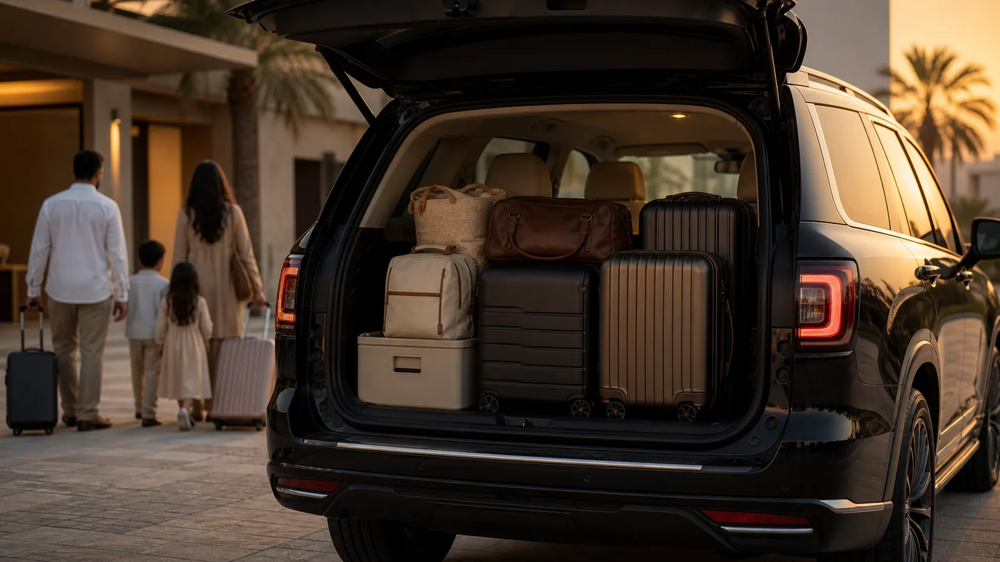

Bahrain Airport drop-off
From Bahrain areas depending on traffic.
Looking for this page in Arabic? Open the Arabic airport planner
Plan airport pickup or drop-off requests between Bahrain, Saudi Arabia, Kuwait, Qatar, UAE and Oman. Choose the airport, pickup or destination, passengers and luggage, then send a clear WhatsApp request to confirm availability and price.
Fixed local estimates only. No external API and no price calculator.
Estimated airport transfer notes will appear here.
Time and distance are estimates only and may change depending on pickup point, final destination, traffic, airport procedures, King Fahd Causeway, border procedures, travel time, luggage and vehicle availability.
Common airport pickup and drop-off requests.
From Bahrain areas depending on traffic.
Send flight number, arrival time and destination.
Cross-border route via causeway and border.
DMM pickup to Bahrain depending on availability.
Plan causeway and border time before the flight.
Allow time for causeway and border procedures.
Long route requiring early coordination.
Long trip depending on timing and stops.
Can be checked depending on route and availability.
Doha or Doha Airport requests confirmed on WhatsApp.
Dubai or Abu Dhabi depending on trip details.
Send complete flight details for faster confirmation.

A suitable vehicle can be checked depending on passengers, luggage size and availability.
Airport name, flight number, arrival or departure time, pickup location, destination, passengers, luggage, date and notes.
A flight number helps with airport pickup coordination, but the planner keeps it optional.
Quick answers before sending your WhatsApp request.
Yes, depending on timing, causeway, border conditions and availability.
DMM to Bahrain pickup can be coordinated depending on flight time, passengers and luggage.
Yes. Share pickup point, flight time and flight number if available.
It is recommended for airport pickup, especially for arrivals and delays.
Extra luggage can be checked depending on size and vehicle availability.
No. Pricing is confirmed on WhatsApp based on route, timing, passengers, luggage and availability.
Times change with traffic, airport procedures, causeway, border procedures and stops.
Yes, depending on passengers, luggage and availability.
Some GCC airport requests can be coordinated depending on route and availability.
Choose details in the planner, then send the prepared WhatsApp request.
Existing Vendora pages that help you choose the closest route.